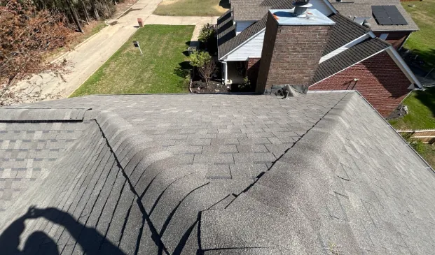
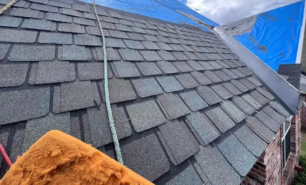

As a homeowner, your roof is one of the most significant parts of your property, playing a crucial role in safeguarding you and your family from unpredictable elements. It stands as a formidable barrier against rain, snow, wind, and sun, ensuring that your home remains a haven.
However, like any other essential aspect of your home, your roof demands regular maintenance and attentiveness to ensure longevity and efficiency. This need becomes even more pronounced as the fall season approaches, bringing unique challenges.
The Importance of Regular Roof Maintenance
Regular roof maintenance isn’t just a matter of aesthetic appeal; it’s a vital practice that significantly extends the lifespan of your roofing system. Consider the long-term financial implications: by actively maintaining your roof, you can save yourself from the costs associated with premature replacements and complex repairs.
Beyond financial savings, routine inspections help you identify minor issues that could escalate into major problems if left unattended. This proactive approach alleviates concerns over time and assures your home is protected throughout all seasons.
Understanding Seasonal Challenges: The Impact of Fall on Your Roof
As summer transitions into fall, your roof is subjected to many environmental challenges. Shedding leaves can lead to clogs in gutters and downspouts, increasing the risk of water damage.
With fall’s sudden shifts in weather, existing roof issues could worsen, further threatening the integrity of your roof. Therefore, it becomes vital to prepare your roof for seasonal changes, ensuring it stands resilient against the hurdles that fall presents. This preparation is crucial to maintaining your home’s value and it also fosters a greater sense of security for you and your family.
The Essential Roof Maintenance Checklist
An effective roof maintenance checklist is an invaluable tool for homeowners, ensuring that all critical areas of the roof are examined and tended to throughout the year. With a checklist in hand, you can avoid overlooking crucial inspection points that may lead to costly repairs down the road.
Here’s a detailed roof maintenance checklist to guide you as you prepare for the season:
- Inspect Shingles and Roofing Materials: Examine the condition of your shingles and other roofing components, looking for signs of wear and tear.
- Check for Leaks: Conduct inspections in the roof and attic to detect any potential leaks that could compromise your home.
- Clean Gutters and Downspouts: Ensure that gutters and downspouts are free from debris to allow for proper drainage and minimize water-related issues.
- Assess Attic Ventilation: Proper attic ventilation is essential; make sure air flows freely to prevent moisture buildup and associated problems.
- Look for Signs of Water Damage: Regularly check for any water damage or staining in your home that could indicate roof failure.
- Inspect Flashing Around Chimneys and Vents: Ensure the flashing is intact to prevent leaks, especially in areas prone to water accumulation.
Inspecting Your Roof: Key Elements to Assess
When undertaking a roof inspection, it is important to know what to look for to maintain its overall health. Start by focusing on the condition of your shingles.
Look for cracked, loose, or missing shingles, as these issues can lead to significant leaks and water infiltration into your home.
Shingle Repair: Timing and Techniques

Shingle repair is a vital element of ongoing roof maintenance. If you identify any damaged or missing shingles during your inspection, act quickly and replace them. Delaying this repair can allow water to infiltrate your home, resulting in further costly damage.
While some homeowners may be tempted to tackle shingle repairs, it is often advisable to enlist the help of a professional roofing contractor. An experienced contractor will possess the knowledge and skills to ensure repairs are completed efficiently and effectively, reducing the likelihood of issues coming back.
Differentiating Between Roof Repair and Replacement
In some cases, simply repairing a damaged roof may not suffice. If your roof is aging or has experienced extensive damage, it may be time to consider a full roof replacement. Signs indicating the need for a roof replacement include numerous missing or damaged shingles, consistent leaks, and substantial water damage within the attic.
Consulting with a professional roofing contractor will help in making the best decision for your situation, ensuring the integrity and safety of your home.
The Advantages of Hiring a Professional Roofing Contractor
Although DIY roof maintenance can be fulfilling and cost-effective, the benefits of hiring a professional roofing contractor cannot be overstated. Professionals possess the necessary expertise to identify and address issues that may not be visible to the average homeowner.
Moreover, they come equipped with specialized tools and safety gear, making the job safer and more efficient. Many contractors also provide warranties on their work, which lends you added peace of mind in knowing that your roof is in capable hands.
The Value of a Free Roof Inspection
Many reputable roofing companies offer free roof inspections as part of their services. Taking advantage of this opportunity can provide a professional overview of your roof’s condition, allowing for early detection of potential issues before they escalate into expensive repairs.
DIY Roof Maintenance Tips for Homeowners

For those who prefer a hands-on approach to home maintenance, several DIY roof maintenance tasks can easily be performed. Regularly cleaning your gutters and downspouts, for instance, is a straightforward yet highly effective way to prevent water damage and extend the life of your roof.
In addition to gutters, routinely checking your attic for signs of leaks or water damage is crucial. Ensuring proper attic ventilation helps prevent moisture buildup and reduces the risk of mold growth. Always prioritize safety when performing roof maintenance tasks, using appropriate ladders and gear.
Conclusion: The Long-Term Value of Regular Roof Maintenance
The importance of regular roof maintenance cannot be overstated. It is an investment that pays dividends over time, not only extending the life of your roof but preventing expensive repairs and replacements.
Whether you choose to take a DIY approach or hire a professional roofing contractor, maintaining your roof is a critical aspect of successful homeownership. By actively engaging in preventative maintenance and inspections, you can ensure that your home remains a secure and comfortable environment for you and your loved ones. As we transition into the fall season, now is the perfect time to take stock of your roof and prepare it for whatever the elements may bring.
For expert residential roofing services to prepare you for the winter in Arkansas and Utah, contact EZ Roofing today!